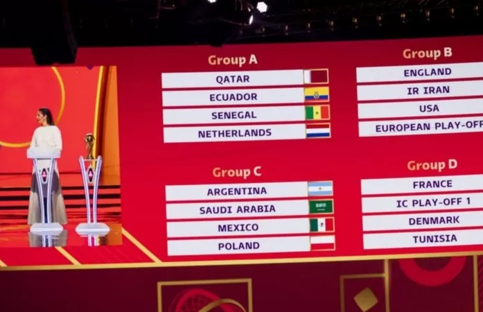

ከየፈርጁ

ማርስ ላይ ሕይወት ነበረ? 2 ቢሊየን ዶላር የወጣባት ሮቦት መልስ ይኖራታል

አነጋጋሪው ኤሎን መስክ ማነው?

በኳታሩ የዓለም ዋንጫ ሴት ዳኞች ለመጀመሪያ ጊዜ ውድድሮችን ሊመሩ ነው

ሳዲዮ ማኔ: ህልም አሳዳጁ አፍሪካዊ ፈርጥ

በጦርነቱ ምክንያት ከአለም ተቆራርጣ ባለችው መቀለ ኑሮ ምን ይመስላል?

21 ሚያዝያ 2022
በዓለም ዋንጫ ታሪክ ለመጀመሪያ ጊዜ በአረብ አገር የሚካሄደው የዓለም ዋንጫ በ28 ቀናት ውስጥ ይጠናቀቃል። በምድብ አንድ (A) አዘጋጇ ኳታር፣ ከኔዘርላንድስ፣ ሴኔጋልና ኢኳዶር ጋር ተደልድላለች። በምድብ ሁለት (B) እንግሊዝ፣ አሜሪካ እና ኢራን የተመደቡ ሲሆን ከዌልስ፣ ስኮትላንድ አልያም ዩክሬን አንዳቸው አራተኛ ቡድን ሆነው ምድብ ሁለትን ይቀላቀላሉ። በሩሲያ ወረራ ምክንያት ዩክሬን ከስኮትላንድ ጋር የነበራትን የጥሎ ማለፍ ውድድር ማከናወን ባለመቻሏ ጨዋታዎቹ ከሁለት ወራት በኋላ እንዲካሄዱ ቀጠሮ ተይዞላቸዋል። በምድብ ሶስት (C) ደግሞ አርጀንቲና፣ ሜክሲኮ፣ ፖላንድ እና ሳኡዲ አረቢያ ተቀምጠዋል።
በምድብ አራት (D) ያለፈው ዓለም ዋንጫ አሸናፊዋ ፈረንሳይ፣ ዴንማርክ፣ ቱኒዚያ እንዲሁም ከፔሩ፣ አውስትራሊያ እና የተባበሩት አረብ ኤምሬትስ አሸናፊ ከምድባቸው ለማለፍ ይፋለማሉ። ምድብ አምስት (E) በርካቶች የሞት ምድብ ብለውታል። በዚህ ምድብ ስፔን እና ጀርመን ተፋጠዋል። ሦስተኛዋ አገር ጃፓን ስትሆን፤ የኮስታሪካ እና ኒውዚላንድ አሸናፊ በዚህ ምድብ ተደልድለዋል። ምድብ ስድስት (F) ደግሞ ቤልጂየም፣ ያለፈው የዓለም ዋንጫ የፍጻሜ ተፋላሚ ክሮሺያ፣ ሞሮኮና ካናዳን የያዘ ሲሆን በምድብ አባት (G) ብራዚል፣ ስዊዘርላንድ፣ ሰርቢያና ካሜሩን ተመድበዋል። በመጨረሻው ምድብ ስምንት (H) ደግሞ የክርስቲያኖ ሮናልዶ አገር ፖርቹጋል፣ ዩራጓይ፣ ደቡብ ኮሪያ እና ጋና አንድ ላይ ተመድበዋል። የኳታር የዓለም ዋንጫ ሕዳር 12/2015 ዓ.ም. ጀምሮ እስከ ታህሳስ 9/2015 የሚቆይ ሲሆን ተሳታፊዎቹ 32 ቡድኖች ለ28 ቀናት ይፋለማሉ። ከዚህ በኋላ በዓለም ዋንጫው የሚሳተፉ ቡድኖች ቁጥር ወደ 48 ከፍ እንደሚል ፊፋ ያስታወቀ ሲሆን የኳታሩ የዓለም ዋንጫ ለመጨረሻ ጊዜ ነው 32 ቡድኖችን ብቻ የሚያሳትፈው። ያለፈውን የዓለም ዋንጫ ያሸነፈችው ፈረንሳይ በኳታሩም የዓለም ዋንጫ ሊሳካላት እንደሚችል ከፍተኛ ግምት የተሰጣት ቢሆንም በአውሮፓውያኑ 1962 ብራዚል ለተከታታይ ሁለተኛ ጊዜ ዋንጫውን ካነሳች በኋላ ማንም አገር በተከታታይ ዋንጫ ባለማንሳቱ ፈረንሳይ በኳታር ትልቅ የቤት ሥራ ይጠብቃታል ተብሏል። ብራዚልና አርጀንቲን ከምድባቸው እንደሚያልፉ ከወዲሁ የሚጠበቅ ሲሆን ሴኔጋል ደግሞ ከሌሎቹ የአፍሪካ አገራት በተሻለ ረጅም ርቀት የመጓዝ ተስፋ ተጥሎባታል። ስፔንና ጀርመንን አንድ ላይ ባደረገው ምድብ አምስትም ቢሆን ትልቅ ፉክክር እንደሚኖርበት ይጠበቃል። ኳታር ለዚህኛው የዓለም ዋንጫ እጅግ የተዋቡና ዘመናዊ ስታዲየሞችን የገነባች ሲሆን በአጠቃላይ ስምንት ስታዲየሞችን ለውድድሩ ማካሄጃነት ትጠቀምባቸዋለች። ከእነዚህ ስታዲየሞች ትልቁ በሌሴይል ከተማ የሚገኘው ሉሴይክ አይኮኒክ ስታዲየም 80ሺህ ተመልካቾችን ያለምንም ችግር ማስተናገድ ይችላል። አነስተኛ የሚባለው አል ዋክራህ አል ጃኑብ የተሰኘው ስታዲየም ሲሆን የመያዝ አቅሙ ደግሞ 40 ሺህ ነው። የመክፈቻው ቀን ወደ ስታዲየም ገብተው ጨዋታዎችን መከታተል የሚፈልጉ ሰዎች ለቲኬት እንዲከፍሉ የሚጠየቁት ዋጋ ከ42 እስከ 472 ፓውንድ ድረስ ነው። ለምድብ ጨዋታዎች ደግሞ ከ8 ፓውንድ እስከ 168 ፓውንድ ድረስ የሚከፈል ሲሆን የመጨረሻውን የዋንጫ ጨዋታ ማየት የፈለገ ሰው ደግሞ ከ157 ፓውንድ እስከ 1227 ፓውንድ ድረስ መክፈል ግድ ይለዋል።